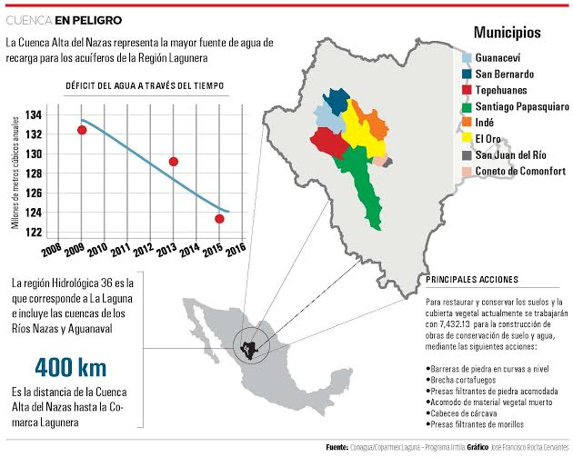

El programa Irritila es un esfuerzo ciudadano para conservar y restaurar la Cuenca Alta del Río Nazas a través de la participación de distintos sectores sociales de la Comarca Lagunera y de la Cuenca en general.
Sin embargo, el programa que beneficia a toda la Comarca y a 14 ejidos con el fin de restaurar la principal fuente de recarga del acuífero, no cuenta con los recursos necesarios para cumplir su meta: trabajar sobre una superficie de 18,000 hectáreas de recursos naturales en beneficio del agua en la región. En la actualidad se realizan trabajos sobre poco más de 7,000 hectáreas.
La cuenca alta del Nazas representa la mayor fuente de agua de recarga para los acuíferos de la región. El objetivo de este proyecto es mejorar la captación de escurrimientos de agua en el Río Nazas y con ello incrementar la recarga que recibe el acuífero principal, informa el presidente de Coparmex Laguna, Roberto Muñoz, principal institución que promueve esta iniciativa.
Los recursos para este programa se obtienen principalmente de dos fuentes: la Conafor y el gobierno del Estado de Durango. Desde hace cinco años existe un convenio con el gobierno federal, para que aporte el doble de recursos que se obtengan de fondos regionales. En 2016, la meta es reunir 1 millón 500 mil pesos, pero la cantidad podría incrementarse con el apoyo de la sociedad civil, destacó Muñoz.
Problemática
La degradación de la cobertura vegetal y alteración de los suelos por el pastoreo y la deforestación de los bosques durante muchos años, están modificando las condiciones naturales de la cuenca alta del Nazas.
Se estima que en esta zona el bosque tiene un alto grado de degradación y se encuentra en proceso de cambio de vegetación, además el pastoreo de ganado y la degradación de la cobertura vegetal están presentes en una parte importante de la superficie de la cuenca alta.
Por si fuera poco, de acuerdo con la Conagua, la recarga anual del acuífero principal es de 518.9 millones de metros cúbicos al año y la extracción es de 930.0 millones de metros cúbicos al año. Todo esto ha ocasionado una tendencia hacia el abatimiento del nivel del agua subterránea, con el riesgo de que se incremente cada vez el deterioro de la calidad del agua; destacan los informes emanados de Coparmex.
La propuesta
Son pocas las empresas que aportan recursos al Programa Irritila, de acuerdo el presidente de Coparmex Laguna. Además de lo que se obtiene de los propietarios de módulos de riego y las aportaciones voluntarias de los ciudadanos a través de los sistemas operadores de agua (SIMAS, SIDEAPA Y SAPAL), no existen otras fuentes de captación de recursos. Adicionalmente el año pasado el gobierno de Coahuila aportó la cantidad de 5 millones de pesos del Fondo para el Agua y el Estado de Durango entregó diez millones de pesos.
El dinero no alcanza porque la extensión territorial en la que hay que trabajar es bastante extensa, enfatiza Roberto Muñoz. Por ello, Coparmex ha lanzado la propuesta de obtener 1 peso por toma domiciliaria como apoyo fijo de los ciudadanos, a través de los sistemas operadores de agua.
“Vamos ya tarde en la carrera porque los mantos acuíferos están muy abatidos, cada vez vamos excavando más profundo, ahorita estamos extrayendo de los 700 a los 800 metros de profundidad y extraemos metales como el arsénico. Trabajar más en la cuenca alta permite recargar más el acuífero y balancear para tener un equilibrio”.
Muñoz destacó que es importante que la ciudadanía participe para atraer más agua a la Laguna.
“Tardó muchas décadas en deteriorarse la cuenca alta, no sé si van a ser las mismas décadas que tardaremos en recuperarla. De aquí que hacemos obra y que se empieza a filtrar el agua va a tardar mucho tiempo”, expresó.
Con la aportación de 1 peso por toma domiciliaria, se podrían abarcar más cantidad de hectáreas y mientras más gente se sume el gobierno va a entrar con más recurso, destacó. Actualmente la propuesta se encuentra en análisis en el Cabildo de Torreón y también se propone la misma acción para los municipios de Gómez Palacio y Lerdo. Tan sólo en Torreón existen 180 mil tomas domiciliarias, lo que significa una importante fuente de apoyo para el programa Irritila, destacó el presidente del organismo.
Infografía
